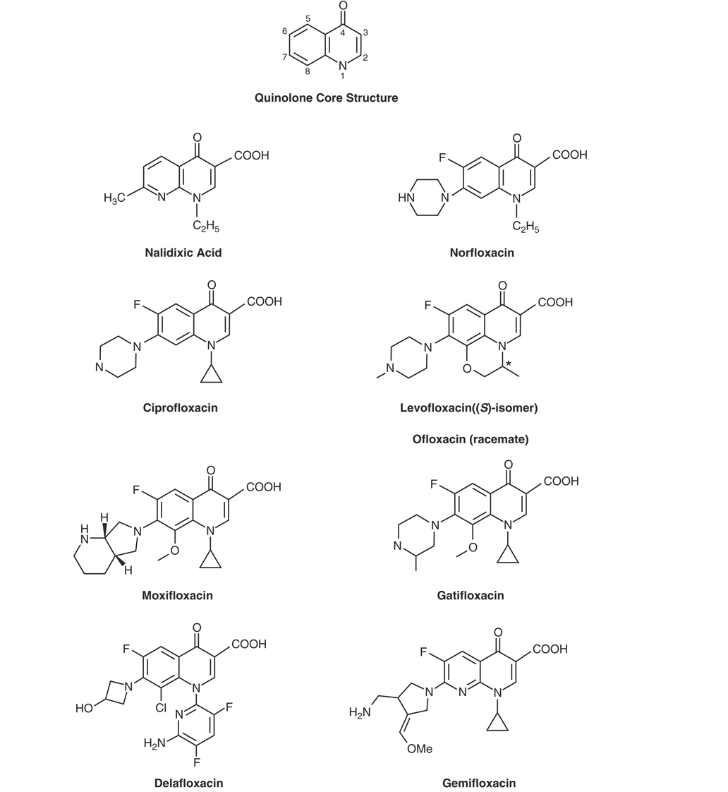
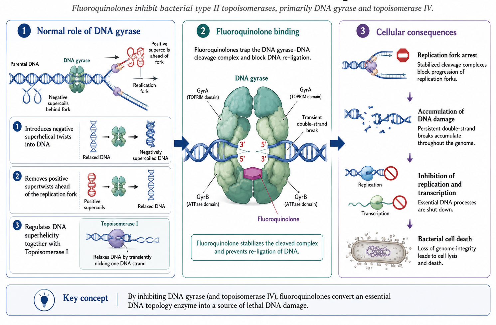
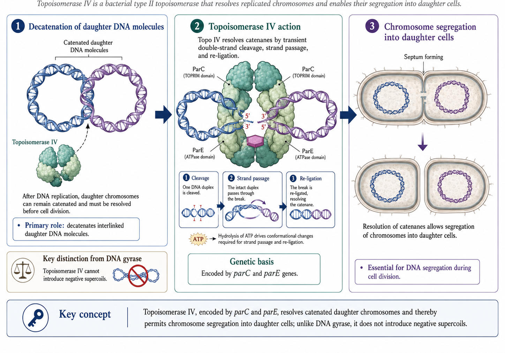
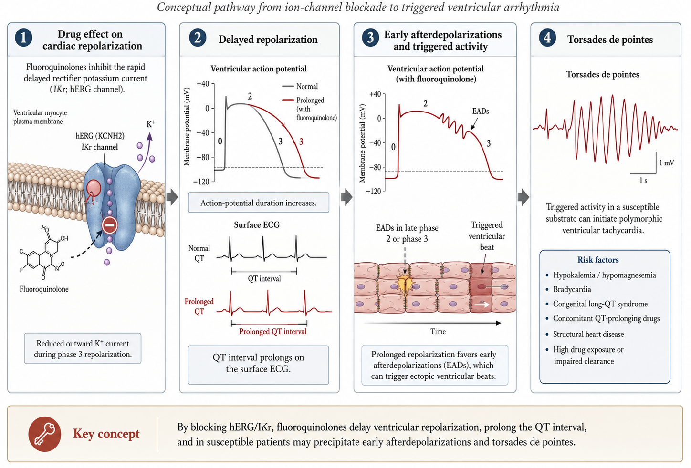

3.5 Primary vs Secondary Targets
| Bacterial Type | Primary Target | Secondary Target |
|---|---|---|
| Gram-negative bacteria | DNA gyrase | Topoisomerase IV |
| Gram-positive bacteria | Topoisomerase IV | DNA gyrase |
Fluoroquinolone Antimicrobial Agents
[Link to HTML slides] (https://russlewisbo.github.io/fluoroquinolones/fluoroquinolone-slides.html#/fluoroquinolones) Link to recorded lecture
| Quinolone | Route | Dose |
|---|---|---|
| Norfloxacin | PO | 400 mg every 12 hours |
| Ciprofloxacin | PO | 250–750 mg every 12 hours |
| Ciprofloxacin | IV | 200–400 mg every 12 hours |
| Ofloxacin | PO/IV | 200–400 mg every 12 hours |
| Levofloxacin | PO/IV | 250–750 mg daily |
| Moxifloxacin | PO/IV | 400 mg daily |
| Gemifloxacin | PO | 320 mg daily |
| Delafloxacin | PO | 450 mg every 12 hours |
| Delafloxacin | IV | 300 mg every 12 hours |
Decrease dose in renal failure for all quinolones except moxifloxacin. CSF penetration is generally low.
Common adverse effects:
Less common but serious:
Prior quinolone allergy and prior neuropathy are contraindications to quinolone use.
Uncomplicated and complicated urinary tract infections, prostatitis, and urethral/cervical gonorrhea (only if isolates are known to be susceptible).
Complicated and uncomplicated UTIs, chronic bacterial prostatitis, complicated intra-abdominal infections, bacterial diarrhea, typhoid fever, acute bacterial sinusitis, lower respiratory tract infections (when not caused by S. pneumoniae), inhalational anthrax, skin and skin structure infections, and bone and joint infections.
Complicated and uncomplicated UTIs, bacterial prostatitis, nongonococcal urethritis and cervicitis caused by Chlamydia trachomatis, acute pelvic inflammatory disease, acute bacterial exacerbations of chronic bronchitis, community-acquired pneumonia, and uncomplicated skin and skin structure infections.
Complicated and uncomplicated UTIs, acute pyelonephritis, chronic bacterial prostatitis, acute bacterial exacerbations of chronic bronchitis, community-acquired pneumonia, hospital-acquired pneumonia, inhalational anthrax, acute bacterial sinusitis, and complicated and uncomplicated skin and skin structure infections.
Community-acquired pneumonia, acute bacterial exacerbation of chronic bronchitis, acute bacterial sinusitis, and multidrug-resistant tuberculosis (off-label use).
Community-acquired pneumonia and acute bacterial exacerbations of chronic bronchitis.
Acute bacterial skin and skin structure infections.
Quinolones rapidly inhibit bacterial DNA synthesis, leading to bacterial cell death. The molecular targets are two members of the topoisomerase class of enzymes: DNA gyrase and topoisomerase IV (Drlica and Hooper, 2003; Wang, 1996).
The quinolone nucleus and key structural modifications are shown in Figure 1.

DNA gyrase is an essential bacterial enzyme composed of two A and two B subunits (products of the gyrA and gyrB genes) (Drlica and Zhao, 1997). Its functions include:

DNA gyrase activities result from coordinated breaking of both strands of duplex DNA, passage of another segment of DNA through the break, and resealing—the defining mechanism of type II topoisomerases.
Topoisomerase IV is another type II topoisomerase composed of two subunits encoded by parC and parE genes (Kato et al., 1990). It functions to:

Some pathogens (e.g., M. tuberculosis, T. pallidum) lack topoisomerase IV, in which case gyrase serves both functions.
Quinolones inhibit enzyme function by:
Quinolones bind specifically to the complex of DNA gyrase and DNA (not to DNA gyrase alone). Single gyrA or gyrB mutations can produce quinolone resistance (Kohanski et al., 2007).
| Bacterial Type | Primary Target | Secondary Target |
|---|---|---|
| Gram-negative bacteria | DNA gyrase | Topoisomerase IV |
| Gram-positive bacteria | Topoisomerase IV | DNA gyrase |
Bacteria acquire resistance to quinolones through several mechanisms (Hooper and Jacoby, 2016; Jacoby, 2005):
Alterations in the A subunit of DNA gyrase causing resistance are clustered between amino acids 67–106 near the active site (tyrosine-122). Changes in serine-83 (to leucine or tryptophan) are most common and cause the largest increment in resistance.
High-level resistance develops through sequential mutations in gyrA/gyrB and parC/parE genes, with first mutations occurring in the more sensitive target enzyme.
Efflux pumps in gram-negative bacteria:
These RND-family pumps have broad substrate profiles, contributing to multidrug resistance (Piddock, 2006; Poole, 2000).
Efflux pumps in gram-positive bacteria:
Although plasmid-mediated resistance alone usually causes only low-level resistance, it facilitates selection of chromosomal mutations and increases resistance prevalence.
The qnr genes encode pentapeptide repeat proteins that protect DNA gyrase and topoisomerase IV from quinolone action. Seven families exist: qnrA, qnrB, qnrS, qnrC, qnrD, qnrE, and qnrVC (Martínez-Martínez et al., 1998; Strahilevitz et al., 2009; Tran and Jacoby, 2002).
AAC(6’)-Ib-cr: A variant aminoglycoside acetyltransferase that acetylates the piperazinyl nitrogen of ciprofloxacin and norfloxacin, causing 3–4-fold MIC increases (Robicsek et al., 2006).
Quinolones are most active against aerobic gram-negative bacilli, particularly Enterobacterales and Haemophilus spp., and against gram-negative cocci (Neisseria spp., Moraxella catarrhalis) (Eliopoulos and Eliopoulos, 2003).
Ciprofloxacin remains the most potent fluoroquinolone against gram-negative bacteria. Only ciprofloxacin and levofloxacin have sufficient activity against P. aeruginosa.
Activity against streptococci varies among quinolones:
Gemifloxacin and delafloxacin are especially potent against S. pneumoniae and S. aureus, respectively.
| Organism | Cipro | Levo | Moxi | Gemi | Dela |
|---|---|---|---|---|---|
| MSSA | 0.5 | 0.25 | 0.12 | 0.06 | 0.008 |
| MRSA | ≥32 | 16 | 4 | 8 | 0.5 |
| S. pneumoniae | 2 | 1 | 0.25 | 0.06 | 0.015 |
Moxifloxacin, delafloxacin, and sitafloxacin have increased potency against anaerobes.
| Agent | B. fragilis MIC90 |
|---|---|
| Ciprofloxacin | 4–64 |
| Levofloxacin | 2–>16 |
| Moxifloxacin | 0.5–8 |
| Delafloxacin | 0.12 |
Ciprofloxacin, ofloxacin, levofloxacin, gatifloxacin, and moxifloxacin are active against:
| Agent | M. tuberculosis | M. avium | M. fortuitum |
|---|---|---|---|
| Ciprofloxacin | 1 | 16 | 0.3–>4 |
| Levofloxacin | 0.25–1 | 0.5–64 | 0.06–2 |
| Moxifloxacin | 0.125–0.5 | 0.5–16 | 0.06–1 |
Fluoroquinolones added to standard TB therapy increased bactericidal activity but failed to shorten treatment duration or improve survival in tuberculous meningitis (Gillespie et al., 2014; Heemskerk et al., 2016).
All fluoroquinolones have activity against:
| Organism | Cipro | Levo | Moxi |
|---|---|---|---|
| Legionella spp. | 0.016–0.06 | 0.016–0.03 | 0.06 |
| M. pneumoniae | 0.5–4 | 0.5–2.5 | 0.12–0.3 |
| C. pneumoniae | 2 | 0.5–1 | 0.06–1 |
| C. trachomatis | 0.5–2 | 0.25–0.5 | 0.06 |
Activity is reduced by:
Unlike other fluoroquinolones, delafloxacin is weakly acidic, providing enhanced antibacterial potency in low-pH environments.
Quinolones are well absorbed from the upper GI tract with bioavailability >50% for all compounds (approaching 100% for several). Peak serum concentrations are attained within 1–3 hours (Dudley, 2003).
| Parameter | Norfloxacin | Ciprofloxacin | Ofloxacin | Levofloxacin | Moxifloxacin | Gemifloxacin | Delafloxacin |
|---|---|---|---|---|---|---|---|
| Dose (mg) PO | 400 | 500 | 400 | 500 | 400 | 320 | 450 |
| Cmax (μg/mL) PO | 1.5 | 2.4 | 4.6 | 5.7 | 4.3 | 1.4 | 7.45 |
| Protein binding (%) | — | 30 | 30 | 24–52 | 39–52 | 55–73 | 84 |
| Half-life (h) | 3.3 | 4 | 4–5 | 6–8 | 9.5 | 7 | 4–8.5 |
| Bioavailability (%) | 50 | 70 | >95 | 99 | 86–100 | 71 | 59 |
Quinolones have high volumes of distribution, indicating tissue accumulation. Concentrations exceeding serum levels are found in:
CSF penetration is generally low, though fluoroquinolones penetrate better than β-lactams in the absence of meningeal inflammation (Nau et al., 2010).
| Route | Primary | Mixed | Minimal |
|---|---|---|---|
| Renal | Ofloxacin, Levofloxacin | Ciprofloxacin, Norfloxacin | Moxifloxacin |
| Hepatic | Moxifloxacin, Nalidixic acid | — | Ofloxacin, Levofloxacin |
| Quinolone | Normal | GFR 10–50 | GFR <10 | Dialysis |
|---|---|---|---|---|
| Norfloxacin | 400 mg q12h | 1× dose q24h | 1× dose q24h | No (H, P) |
| Ciprofloxacin | 250–750 mg q12h | 1× dose q18h | 1× dose q24h | No (H, P) |
| Ofloxacin | 200–400 mg q12h | 1× dose q24h | ½ dose q24h | No (H, P) |
| Levofloxacin | 250–750 mg q24h | ½ dose q24h | ½ dose q48h | No (H, P) |
| Moxifloxacin | 400 mg q24h | No change | No change | No (H, P) |
Aluminum-, magnesium-, and calcium-containing antacids, sucralfate, iron supplements, and zinc-containing multivitamins markedly reduce quinolone absorption. Take quinolones 2 hours before or 2–6 hours after these agents (Radandt et al., 1992).
CYP1A2 interactions (primarily ciprofloxacin):
Other interactions:
Quinolones are highly effective for UTIs, with urinary concentrations providing substantial therapeutic ratios against most pathogens (Gupta et al., 2011; Hooton et al., 2013).
Uncomplicated cystitis:
Acute pyelonephritis:
For S. saprophyticus infections, 7-day regimens are preferred due to failures with shorter courses.
Fluoroquinolones achieve therapeutic concentrations in prostatic tissue and are first-line for chronic bacterial prostatitis. Treatment duration: 4–6 weeks (Naber et al., 2008).
Due to increasing resistance, quinolones are no longer recommended for empirical treatment of gonorrhea in most areas. Use only if susceptibility is confirmed (Hooper and Wolfson, 1989).
Quinolones remain effective for:
Bacterial diarrhea:
Typhoid fever:
Community-acquired pneumonia:
Respiratory fluoroquinolones (levofloxacin, moxifloxacin, gemifloxacin) are effective monotherapy covering:
Reserve respiratory fluoroquinolones for patients with comorbidities, recent antibiotic use, or in areas with high macrolide resistance (Mandell et al., 2007; Metlay et al., 2019).
COPD exacerbations:
Fluoroquinolones effective against common pathogens including P. aeruginosa.
Hospital-acquired pneumonia:
Ciprofloxacin or levofloxacin may be used, often in combination therapy, particularly for Pseudomonas coverage.
Fluoroquinolones achieve adequate bone concentrations and have good oral bioavailability, allowing transition from IV to oral therapy (Berbari et al., 2015; Lipsky et al., 2004).
For Staphylococcus osteomyelitis, combination with rifampin may be considered, though interactions require dose adjustment.
Tuberculosis:
Nontuberculous mycobacteria:
Most common adverse effects (1–5%):
All antibiotics increase C. difficile infection risk. Quinolones have been associated with outbreaks of the hypervirulent NAP1/BI/027 strain (Lode and Rubinstein, 2003).
CNS effects occur in 1–4% of patients:
Fluoroquinolones are associated with tendinitis and tendon rupture, particularly in patients >60 years, those on corticosteroids, and organ transplant recipients. The Achilles tendon is most commonly affected (Stahlmann and Lode, 2013).
Risk factors:
QT prolongation is a class effect, varying by agent (Yap and Camm, 2003):

Avoid quinolones (especially moxifloxacin) in patients with:
Both hypo- and hyperglycemia reported, particularly with (FDA Drug Safety Communication, 2018):
Peripheral neuropathy may occur rapidly (within days) and may be irreversible. Discontinue immediately if symptoms develop (FDA Drug Safety Communication, 2018).
More common with some agents (lomefloxacin, sparfloxacin) than others. Advise sun protection.
Rare but serious. Trovafloxacin withdrawn due to hepatotoxicity.
Pediatrics: Generally avoided due to concerns about cartilage toxicity, though ciprofloxacin approved for specific indications (Lode and Rubinstein, 2003).
Pregnancy: Category C; avoid unless no alternatives.
Myasthenia gravis: May exacerbate muscle weakness; avoid or use with caution.
Fluoroquinolones remain valuable antimicrobial agents with broad-spectrum activity and excellent oral bioavailability. Key considerations include:
| Clinical Scenario | Preferred Agent(s) |
|---|---|
| Pseudomonas infection | Ciprofloxacin, Levofloxacin |
| CAP/Respiratory | Levofloxacin, Moxifloxacin |
| SSTI (including MRSA) | Delafloxacin |
| UTI/Prostatitis | Ciprofloxacin, Levofloxacin |
| Renal impairment | Moxifloxacin |
| Cardiac risk | Ciprofloxacin |
| Anaerobic coverage needed | Moxifloxacin |
Use fluoroquinolones judiciously, reserving them for appropriate indications and avoiding use when safer alternatives exist, particularly for uncomplicated infections.